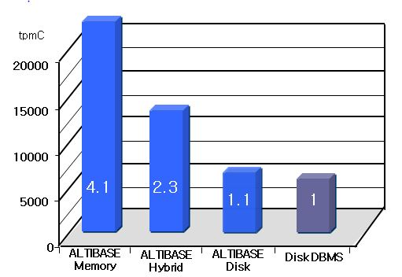

Overview
Version
All the versions of Altibase
The biggest difference between In-Memory-based DBMS and Disk-based DBMS
As an Altibase Hybrid DBMS, it supports both In-Memory DB and Disk-based DB.
- Differences from Altibase HDB's In-Memory DB
- When operating DBMS, the location where the database resides is different.
- In a disk-based DBMS, the entire database resides on the disk and the necessary data is cached and managed in the memory buffer, whereas the in-memory DBMS is managed by residing the entire backup database on the disk in the main memory.
- There is a significant difference in performance.
Although almost the same in terms of functionality, in-memory DBMSs are about 4 to 10 times faster than disk-based DBMSs, depending on the operating environment.
Altibase HDB is divided into three methods: Memory Only, Hybrid, and Disk Only, and five virtual simultaneous transactions that meet TPC-C standards.
As a result of measuring online transaction processing performance by combining (order transaction, payment transaction, shipping transaction, order status transaction, stock level transaction), it showed higher performance than Disk DBMS.

- When operating DBMS, the location where the database resides is different.
{kind=link}
{kind=link}